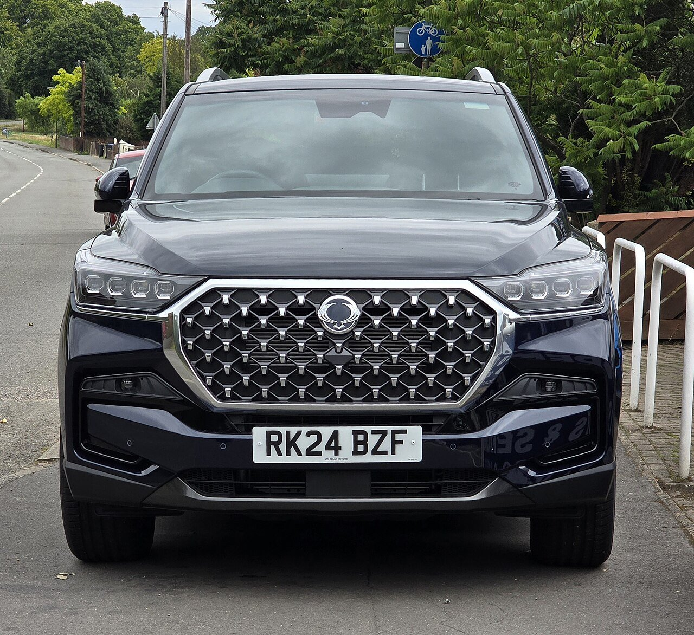
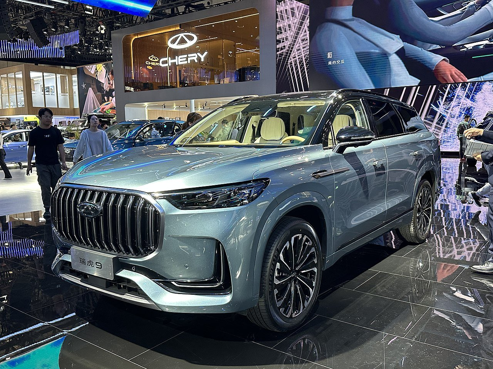
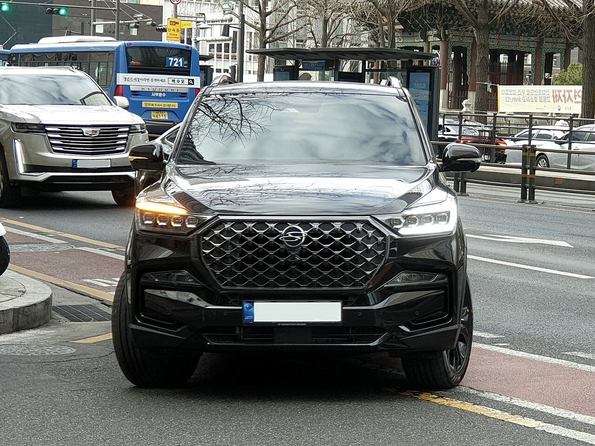

▲ KGM의 플래그십 SUV 렉스턴. 그 후속을 이을 '프로젝트 S10'이 개발에 속도를 내고 있다 ⓒ Calreyn88, Wikimedia Commons (CC BY-SA 4.0)
KGM(옛 쌍용자동차)이 '프로젝트 S10'이라는 이름 아래 새로운 플래그십 SUV 개발에 속도를 내고 있습니다. 렉스턴의 뒤를 잇는 이 모델은 현대차 팰리세이드가 굳건히 지켜온 대형 SUV 시장에 KGM이 던지는 승부수로 평가받습니다.
업계에서는 이번 프로젝트의 성공 여부가 가격 경쟁력, 디젤을 완전히 배제한 파워트레인 전환, 그리고 렉스턴의 명성을 잇는 차세대 플래그십으로서의 역할이라는 세 가지 열쇠에 달려 있다고 봅니다. 국내외에 흩어진 정보를 취합해 무엇이 알려졌는지 정리했습니다.
1. 가격 경쟁력 — 팰리세이드보다 저렴한 시작가

▲ 프로젝트 S10이 정면으로 겨냥하는 대형 SUV 시장의 강자, 현대 팰리세이드 ⓒ 현대자동차 공식
업계에서는 프로젝트 S10 하이브리드 모델의 시작 가격을 친환경차 세제 혜택 적용 후 3,700만~3,900만 원대로 예상하고 있습니다. REEV(주행거리연장형 전기차) 모델 역시 4,000만 원대 초반에 책정될 가능성이 거론됩니다. 이는 4,000만 원대에서 시작하는 팰리세이드 가솔린 모델보다 낮은 수준으로, KGM이 대형 SUV 시장에서 가격을 핵심 무기로 삼았다는 해석이 나옵니다.
9년 만에 나오는 렉스턴 후속 모델이라는 상징성에, 파격적인 가격표까지 더해질 경우 팰리세이드와 기아 모하비가 양분해온 대형 SUV 시장 구도에 실질적인 변수로 작용할 수 있다는 전망이 나옵니다.
2. 파워트레인 전환 — 디젤은 없다, 체리와 손잡은 HEV·REEV

▲ 프로젝트 S10의 파워트레인·플랫폼 협력사인 중국 체리자동차의 티고 9 ⓒ JustAnotherCarDesigner, Wikimedia Commons (CC BY-SA 4.0)
렉스턴과 가장 크게 달라지는 지점은 디젤 엔진의 부재입니다. 프로젝트 S10은 디젤 라인업을 과감히 정리하고, 중국 체리자동차와 협력해 개발한 듀얼테크 하이브리드(HEV)와 주행거리연장형 전기차(REEV)를 주력 파워트레인으로 내세울 예정입니다.
플랫폼 역시 체리자동차의 티고 9(Tiggo 9) 기반으로 개발되는 것으로 알려졌습니다. 국내 완성차 업체가 중국 파트너사와 손잡고 플랫폼·파워트레인을 공동 개발하는 사례가 늘어나는 흐름 속에서, KGM 역시 디젤 중심의 SUV 브랜드 이미지에서 벗어나 전동화 대응력을 끌어올리려는 전략으로 풀이됩니다.
3. 렉스턴 명성 잇는 차세대 플래그십

▲ 9년 만에 세대교체를 앞둔 렉스턴. 후속 모델의 어깨가 무겁다 ⓒ Damian B Oh, Wikimedia Commons (CC BY-SA 4.0)
디자인은 2023년 서울모빌리티쇼에서 공개된 F100 콘셉트카의 강인한 이미지에서 영감을 받은 것으로 전해집니다. 위장막 사이로 포착된 스파이샷에서는 F100을 연상시키는 각진 헤드램프가 눈에 띕니다. 다만 체리 티고 9 플랫폼을 기반으로 한 차체 자체는 유선형에 가까워, 직선적인 전면부와 부드러운 실루엣이 다소 어색하게 어우러진다는 지적도 국내 자동차 커뮤니티를 중심으로 나오고 있습니다.
차체 크기는 전장 약 4,900mm, 휠베이스 2,900mm를 넘길 것으로 전망되며, 이는 팰리세이드(4,980mm)와 기아 모하비(4,930mm)가 지켜온 대형 SUV 체급에 정면으로 도전하는 수치입니다. 차명 후보로는 '아리랑'이 거론되고 있으며, KGM은 정식 출시를 앞두고 차명 관련 설문조사도 진행 중인 것으로 알려졌습니다.
4. 종합 평가 — 출시는 언제, 성공 가능성은?
출시 시기는 매체마다 다소 엇갈립니다. 2026년 12월 출시설과 2027년 상반기 출시설이 동시에 거론되고 있어, 정확한 일정은 아직 조율 중인 것으로 보입니다. 확실한 것은 KGM이 이번 모델에 걸고 있는 기대가 상당히 크다는 점입니다. 렉스턴이라는 상징적인 이름을 넘어설 후속 모델이 9년 만에 나온다는 것 자체가 상징성이 크고, 여기에 디젤 없는 전동화 파워트레인과 파격적인 가격표까지 더해진다면 대형 SUV 시장의 구도를 흔들 잠재력은 충분합니다.
다만 중국 플랫폼 기반 개발에 대한 소비자 인식, 그리고 유선형 차체와 직선적 전면부가 뒤섞인 과도기적 디자인에 대한 우려는 넘어야 할 과제로 남아 있습니다. 팰리세이드와 모하비라는 강력한 경쟁자가 버티고 있는 시장에서, 프로젝트 S10이 렉스턴의 명성에 걸맞은 차세대 플래그십으로 자리 잡을 수 있을지 관심이 모입니다.